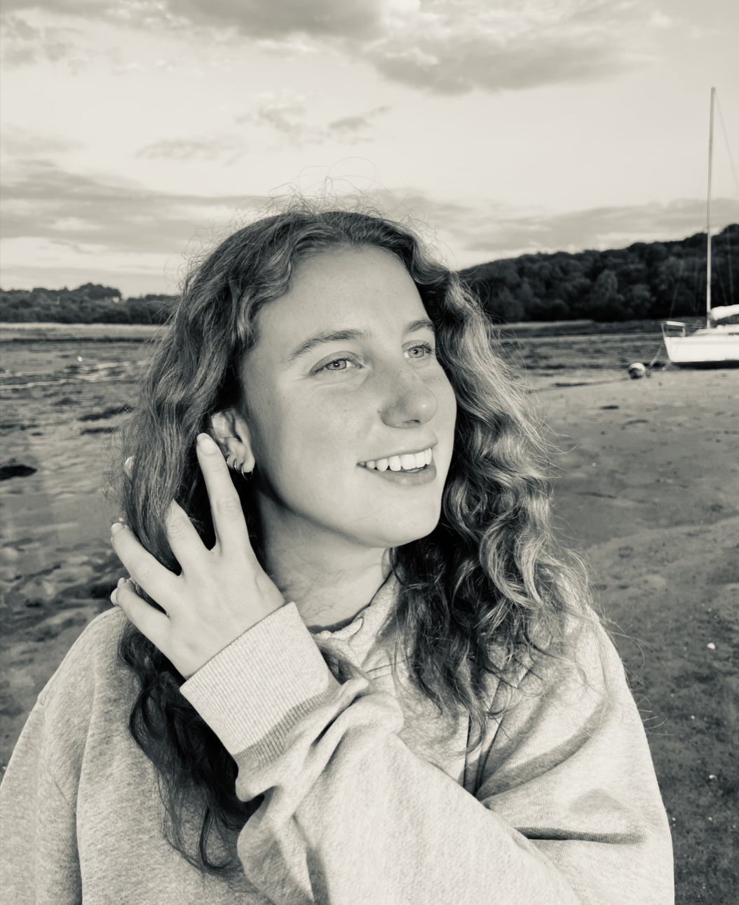

Lidwien Lumkeman
| User Experience designer
Ik ben een User Experience designer in Amsterdam wie gemotiveerd en zelfstandig is en gedisciplineerd te werk gaat. Ik houd ervan om digitale producten te ontwerpen om bedrijven en gebruikers hun doel te laten behalen. Dit doe ik graag door samen te werken met klanten, hierdoor ga ik te werk als een user-centered designer.